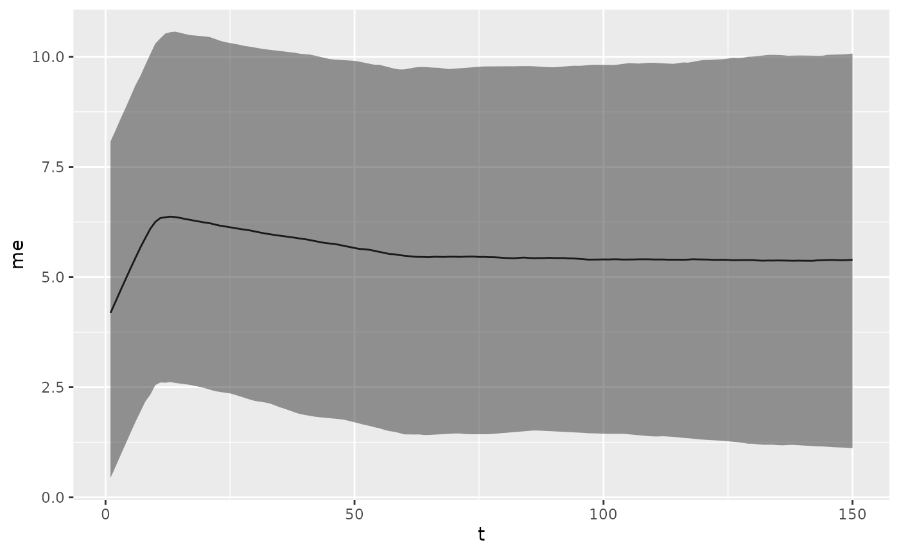
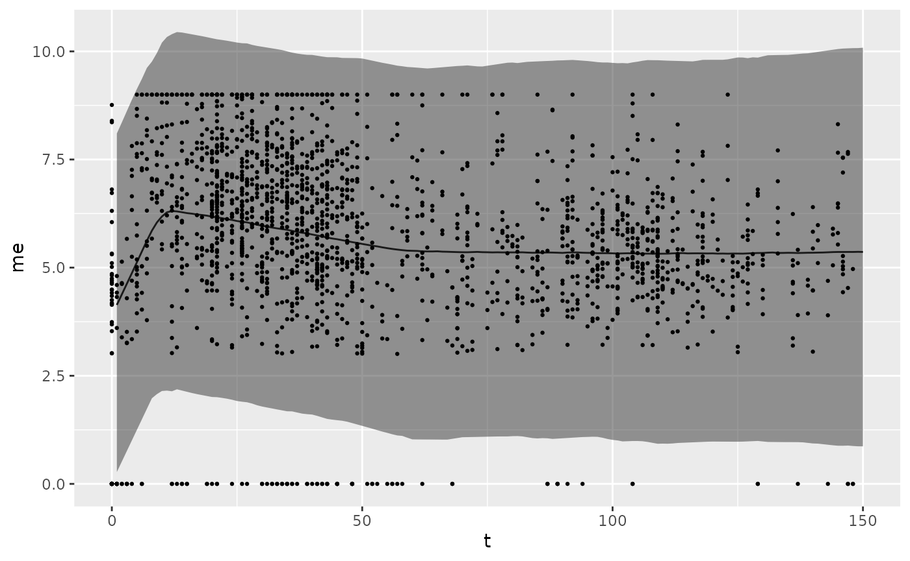
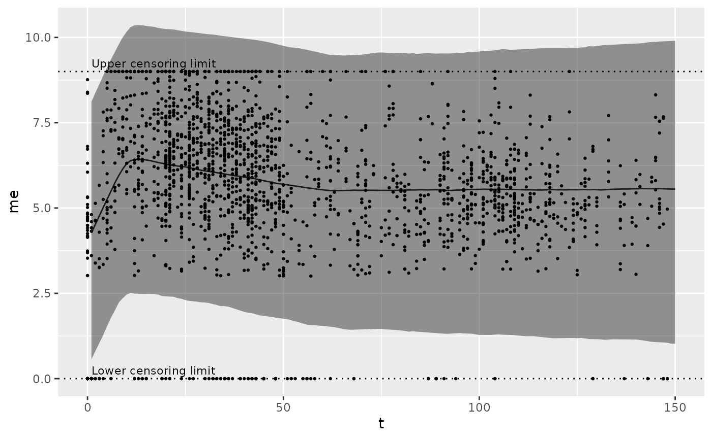
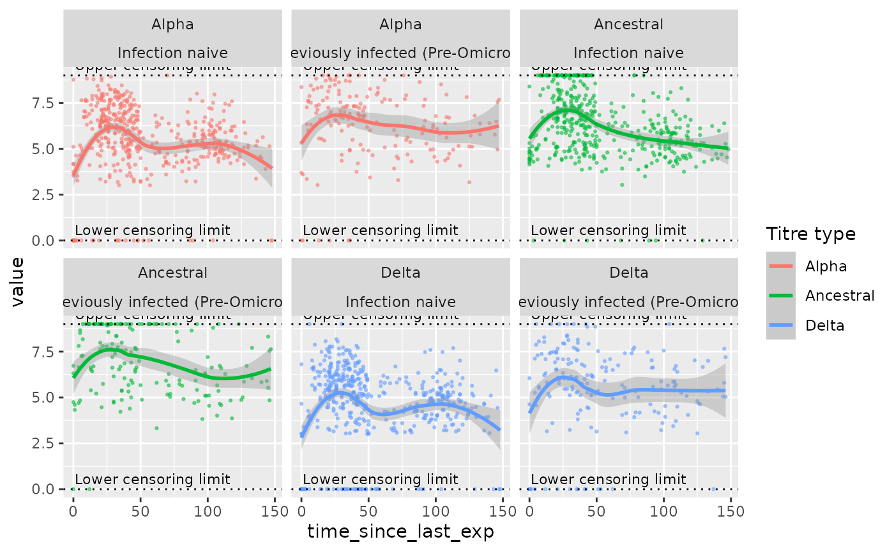

diagnostics.RmdCalling plot on an object of type biokinetics_priors will
generate a plot of the kinetics predicted by the given priors.
priors <- epikinetics::biokinetics_priors()
plot(priors)
You can optionally pass a dataset to compare against the predicted
kinetics. Required columns are time_since_last_exp and
value and values should be on the scale required by the
model.
data <- data.table::fread(system.file("delta_full.rds", package = "epikinetics"))
data[, time_since_last_exp := as.integer(day - last_exp_day, units = "days")]
data <- epikinetics::convert_log2_scale(data, min(data$value))
priors <- epikinetics::biokinetics_priors()
plot(priors, data = data)
If you have an instance of the biokinetics class, the method
plot_prior_predictive generates this plot for the priors
and data given to the model.
data <- data.table::fread(system.file("delta_full.rds", package = "epikinetics"))
priors <- epikinetics::biokinetics_priors()
mod <- epikinetics::biokinetics$new(priors = priors, data = data)
#> INFO [2025-06-17 14:52:59] Preparing data for stan
#> INFO [2025-06-17 14:52:59] Retrieving compiled model
#> CmdStan path set to: /home/runner/.cmdstan/cmdstan-2.36.0
mod$plot_prior_predictive()
If you have an instance of the biokinetics class, the method
plot_model_inputs plots the input data used to fit the
model, disaggregated by the covariates in the covariate formula.
mod <- epikinetics::biokinetics$new(priors = priors, data = data, covariate_formula = ~0 + infection_history)
#> INFO [2025-06-17 14:53:01] Preparing data for stan
#> INFO [2025-06-17 14:53:01] Retrieving compiled model
mod$plot_model_inputs()
#> `geom_smooth()` using method = 'loess' and formula = 'y ~ x'
To play around with different priors and visualise input data filtered and disaggregated in different ways, the function biokinetics$inspect runs a local RShiny app with interactive plots.